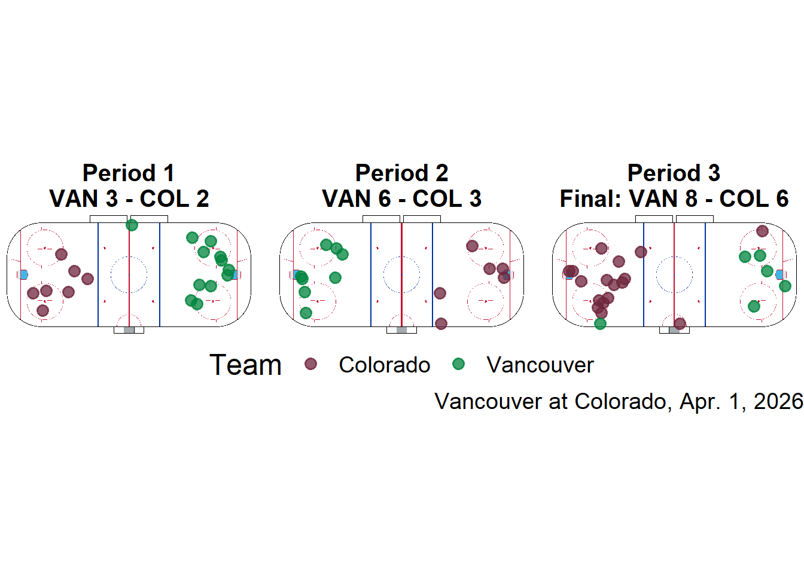
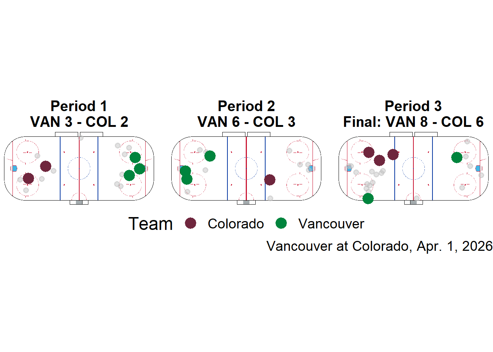
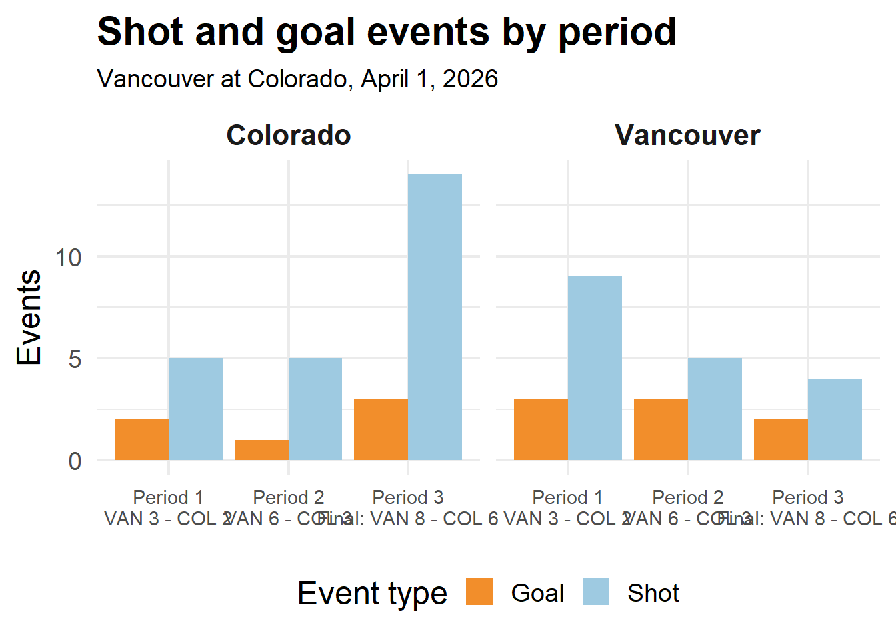
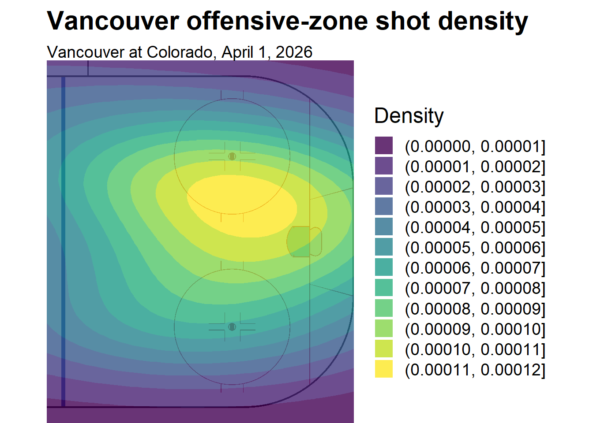

Abstract
This project explores where NHL teams generate and convert shots using data from the 2025-26 regular season. I combine play by play event data with MoneyPucks shot-locaton coordinates. After building a Shiny app to interactivly filter games, periods and events, I focus on a case study of Vancouver at Colorado on April 1, 2026 to look at how shot location and volume change over three periods. Faceted shot maps, event counts, and an offensive zone density heatmap show that Vancouver increasingly attacked the goaltenders stick side, and scored most of their goals from this area, while Colorado’s shots remained more dispersed. These findings show how combining public NHL play by play data and coordinates can reveal patterns in how teams choose to shoot.
Data Description
In this project, I used two primary data sources covering the 2025-26 NHL season. The first is a play by play dataset obtained through the R package nhlscraper which contains event level information about every game, including shot attempts, goals, penalties, and game context. The second data source is from Moneypuck.com and includes shot-locations through x y rink coordinates, event type, team identifiers, and period information for every recorded shot of the same season.
From the play by play data, I focus on events where a shot was taken or a goal was scores, and use variables such ad gameId, isHome, period, shotType, strengthState, and rink coordinates (xCoord, yCoord). Other features are created such as attacking side, estimated angle to the net, and the distance to the net. From the Moneypuck data, I use the adjusted coordinates, event type, home/away team codes, and an indicator for if the event resulted in a goal.
Both data sources index games differently. Moneypuck uses a game_id starting at 1 for each season, and the play by play data uses a gameId starting at 2025000001. Mapping these together allows the Shiny app and visualizations to filter consistantly by game and combine angle information with precise shot coordinates.
Plots
To look at these patterns across all games in the 2025-26 NHL season, I build a Shiny app that links the two data sources and lets the user pick any home and away team, select a specific game between them, and filter by period and shot result (GOAL, SHOT, MISS). For the selected settings, the app updates three views: An intercative shot map with shooting angles, a shot-density heatmap, and a bar chart of shot events by period and team.
First we have a map of all shots on goal taken by each team for each period. This plot is actually not in my Shiny app, there is instead a more detailed plotly version of it with spokes showing the shot angle. I’m quite stumped on why it was struggling to move from there to here, however I believe it was because it is based on a different data set than the other ones. The plot you see here was instead taken from my presentation. It features geom_points() to show where shots were taken, each period, and is most effective when paired with the following plot (also from my presentation) to show which of those shots went in.


Next, we have this bar plot to further communicate what happened during those periods, as counting dots can be rather challenging. This helps quantify those shots, and the ones that went in.

Finally, we have a heat map. This is using shots that didnt go in marked as 0, and goals marked as 1. you can see that during this game, the Canucks had most of their goals come from the goalies right side. The Avalanch goalie for the majority of this game was Mackenzie Blackwood, a goalie who wears his glove on his left hand. Targeting his stick side was clearly much more successful for the Canucks
AI Disclosure
AI was used in debugging. The package sportyR was used to provide the hockey rink, however it initially was not working cleanly with ggplot and declaring aesthetics. Claude Sonnet 4.6 was used to help debug this, with notes added to the project to show this. AI was also used to fix a bug in the Shiny app that caused it to crash upon opening it.
Conclusion
Overall, combining play by play data with Poneypuck shot coordinates shows that Vancouvers offense in this particular game against Colorado relied heavily on generating shots from the goalies right side. Across the periods, the shot maps and bar chart show that vancouver increased both shot volume and finishing from this area as the game progressed, while colorado’s attempts remained more dispersed and less efficient. The offensive zone heatmap suggests this wasn’t a random pattern. The Canucks repeatedly targeted Blackwood’s stick side rather than spreading shots evenly. These results are limited by the focus on a single game, and not taking into account the goalie with stats like expected goals.